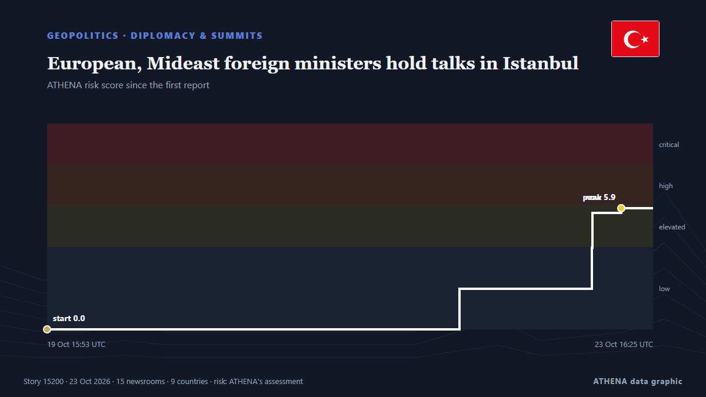

European, Mideast foreign ministers hold talks in Istanbul

Fidan praised regional cooperation Friday, saying, "Lasting solutions cannot be imposed from outside." from The New Arab
Reported independently by 15 outlets in 9 countries since 19 Oct, first by Hürriyet Daily News; coverage is still spreading. ATHENA rates the risk high (6.9/10), driven mainly by the severity of the harm described and the pace of the reporting. Confidence is 93% (high), with 15 independent outlets corroborating it and an average source reliability of 80%. Who reported it: 13 newsrooms in Turkey, 2 newsrooms in Pakistan, 2 newsrooms in Saudi Arabia. The coverage ran from 19 Oct to 23 Oct, over 103 hours.
Why it matters: Security and diplomatic developments can shift alliances, trade and markets well beyond the countries directly involved.
What changed: 14 new reports from 10 newsrooms in the 24 hours to 23 Oct.
At a glance
Selected, scored and written by ATHENA's published methodology. No editor intervenes in individual events. How this is produced ›
| 19 Oct 09:38 UTC | 1 |
|---|---|
| 19 Oct 15:38 UTC | 0 |
| 19 Oct 21:38 UTC | 0 |
| 20 Oct 03:38 UTC | 1 |
| 20 Oct 09:38 UTC | 0 |
| 20 Oct 15:38 UTC | 0 |
| 20 Oct 21:38 UTC | 0 |
| 21 Oct 03:38 UTC | 0 |
| 21 Oct 09:38 UTC | 0 |
| 21 Oct 15:38 UTC | 0 |
| 21 Oct 21:38 UTC | 0 |
| 22 Oct 03:38 UTC | 3 |
| 22 Oct 09:38 UTC | 6 |
| 22 Oct 15:38 UTC | 1 |
| 22 Oct 21:38 UTC | 2 |
| 23 Oct 03:38 UTC | 3 |
| 23 Oct 09:38 UTC | 6 |
| 23 Oct 15:38 UTC | 2 |
| 19 Oct 15:53 UTC | 0.0 |
|---|---|
| 22 Oct 09:33 UTC | 2.0 |
| 23 Oct 06:43 UTC | 4.0 |
| 23 Oct 06:44 UTC | 5.7 |
| 23 Oct 11:19 UTC | 5.9 |
| 23 Oct 16:25 UTC | 6.9 |
Why these numbers
Importance
Risk
Confidence
The reporting — who reported it, and when
headline as published · opens the original- Hürriyet Daily News · TurkeyFidan to meet EU top diplomat, Rutte in Brussels
- Hürriyet Daily News · TurkeyTurkish ministers in Brussels for security, migration talks
- Express Tribune · PakistanTurkish foreign minister to host top diplomats in R4, R4+E3 meetings in Istanbul on Friday
- The Straits Times · SingaporeTurkey to host regional and European foreign ministers for talks on regional conflicts, source says
- Turkish Minute · TurkeyTop European, Mideast diplomats to meet in İstanbul Friday
- Arab News · Saudi ArabiaTop European, Mideast diplomats to meet in Istanbul Friday: Turkish diplomatic source
- Al-Monitor · United StatesTurkey to host regional and European foreign ministers for talks on regional conflicts, source says
- Hürriyet Daily News · TurkeyTürkiye to host key summit with regional, European powers
- Anadolu Agency (English) · TurkeyTurkish foreign minister to host top diplomats in R4, R4+E3 meetings in Istanbul on Friday
- Cyprus Mail · CyprusTurkey to host regional and European foreign ministers for talks on regional conflicts
- Türkiye Today · TurkeyTürkiye to host regional, European foreign ministers for talks on regional conflicts
- Dawn · PakistanPakistan, Egypt, Saudi Arabia, Turkiye to meet European trio in Istanbul
- Al Jazeera English · QatarIran war live: European, Middle East FMs in Istanbul for security talks
- Iran International (English) · IranIstanbul meeting: A new division of labor in the Iran war?
- Asharq Al-Awsat (English) · Saudi ArabiaIstanbul Hosts Middle East, European FMs to Discuss Regional Crises
- Hürriyet Daily News · TurkeyIstanbul to host European, regional ministers for crisis talks
- The New Arab · INTEuropean, Mideast foreign ministers hold talks in Istanbul
- Turkish Minute · TurkeyEuropean, Mideast foreign ministers discuss regional crises in İstanbul
- Hürriyet Daily News · TurkeyRegional powers, European heavyweights meet in Istanbul for 1st joint talks
- Al-Monitor · United StatesEuropean, Mideast foreign ministers hold talks in Istanbul
- Gulf News · United Arab EmiratesEuropean and Middle Eastern powers hold key talks on Strait of Hormuz and Yemen crises
- Anadolu Agency (English) · TurkeyR4+E3 foreign ministers' meeting begins in Istanbul with Italy's participation
- Anadolu Agency (English) · TurkeyTurkish foreign minister warns new attack on Iran would escalate regional conflict
- Hürriyet Daily News · TurkeyTürkiye warns against renewed strikes on Iran as Istanbul hosts high-level talks
- Anadolu Agency (English) · TurkeyTurkish, Italian foreign ministers meet in Istanbul